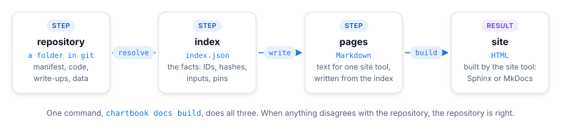
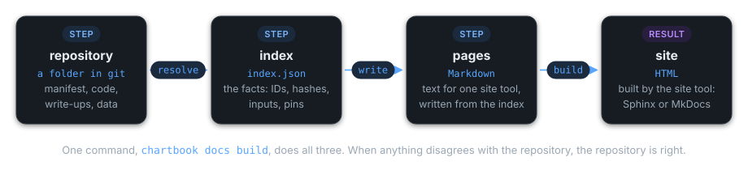

How the Build Works#
chartbook docs build turns a repository into a site in three steps. Each leaves something you
can look at, which is what you want when a build fails or a page looks wrong.
$ chartbook docs build --keep-build-dirs
$ cat _docs/index.json # 1. the index: every fact the pages show
$ cat _docs/cb/dataframes/acme--rates/repo_public.md # 2. the page, as Sphinx saw it
$ open docs/index.html # 3. the site


Resolve. Read
chartbook.tomland the files it names, and write the index: one record for every pipeline, dataframe, column, chart, notebook, note, model and files asset.Write. A writer turns the index into Markdown pages for one site tool. It reads the index and the write-ups the index names, and nothing else.
Build. The site tool, Sphinx by default, turns the pages into HTML. The published index is written beside the site.
Before the three steps comes one question: whose folder this is. A folder you did not make is
rendered as a version from a store is, no query run and no script run, until chartbook trust says
it is yours. A project chartbook init made is trusted already.
1. Resolve: the index#
The index is a flat list of records, built before any page, so that every page says what it says:
{ "kind": "Dataframe", "version": "chartbook/v1",
"id": "ftsfr/fed_yield_curve:treasury_rates",
"pipeline": "ftsfr/fed_yield_curve",
"location": { "kind": "file", "path": "./_data/treasury_rates.parquet", "modified_at": "2026-10-14T07:54:35Z" },
"content_hash": "sha256:4b1f…", "size_bytes": 2148374, "row_count": 15842,
"columns": [ { "name": "date", "dtype": "date" }, { "name": "DGS10", "dtype": "float64" } ],
"date_range": { "first": "1962-01-02", "last": "2026-10-10" },
"glimpse": "Rows: 15842\nColumns: 2\n$ date <date> 1962-01-02, …",
"last_dates": { "min": "2026-10-10 00:00:00", "max": "2026-10-10 00:00:00" },
"docs": { "path": "./docs_src/dataframes/treasury_rates.md", "content_hash": "sha256:9c0e…" } }
Every record has an ID in the form chartbook path takes, a content hash for every file, when the
file was last written, and whatever the manifest declares. A dataframe’s record has its columns and
row count, the span of its date column, and what its page shows of the data, the glimpse and the
last dates, read once here so that no page reads the file again and a version rendered from the
store shows them without the data. A chart’s record names the dataframe that feeds it, a model’s
the data it was trained on and whether that has moved since. index-schema
specifies every record.
Two copies are written. docs/index.json beside the site is published, with no path from the
machine that built it. _docs/index.json in the build directory is full, each location with its
absolute resolved_path. Beside the site goes docs/llms.txt, one line per pipeline and asset, for
an assistant that reads the site. chartbook index diff says in words what changed between two
builds.
2. Write: the writer#
The writer reads the index and the files the index names, and nothing else: no manifest, no folder
walk, no git. [project] writer chooses Sphinx (the default) or MkDocs. One page per record:
Record |
Page |
|---|---|
|
|
|
|
|
|
|
|
|
|
{pipeline} is the ID with / written --. Everything generated lives under cb/, so your own
site pages never collide with it. The build also copies the files the pages need: a chart’s HTML
into _static/, a notebook into cb/notebooks/, a dataframe’s file for download when
enable_data_download = true.
Each page is rendered from Jinja2 templates. To change one, put a file of the same name in the
pipeline’s root: freshness.md (the “Data updated …” line), chart_entry_top.md and
chart_entry_bottom.md, the manifest tables (dataframe_manifest.md, pipeline_manifest.md,
model_manifest.md, file_manifest.md), provenance.md, pipeline_dependencies.md and
index.md. The defaults are in _docs_src/_templates/ after a build with --keep-build-dirs.
3. Build: Sphinx#
ChartBook renders conf.py from the packaged theme and runs python -m sphinx -M html _docs _docs/_build with the Python that is running ChartBook. The HTML is copied to ./docs with a
.nojekyll file for GitHub Pages. _docs/ and _docs_src/ are deleted afterwards unless
--keep-build-dirs keeps them, which is what you want when a build fails.
Incremental builds and watch mode#
chartbook docs build --incremental keeps _docs/ and makes the next build do less: a pipeline
whose files have not changed is not rewritten, a page whose content did not change is not touched,
and Sphinx re-renders only what changed. Deleting _docs/ is always safe, and a clean build is
never wrong. --watch is the incremental build in a loop; open the site with chartbook docs open
and refresh.
Debugging#
A value on a page is wrong. Find the record in
_docs/index.json. If the record is right, the template is; if the record is wrong, the manifest or the file is.A dataframe page shows an error instead of a glimpse. The file the record locates is missing or not of its format, or the database could not be opened; the page says which.
A chart does not show. Check
_static/{pipeline}/{name}.htmland the iframe’ssrcin the chart’s page.A template override has no effect. It must be in the root of the pipeline whose pages it should change, under the template’s own name.
Sphinx errors name paths inside
_docs/;--keep-build-dirslets you open them.
Vocabulary defines the words; CLI Reference has every option of chartbook docs build; writer the design of the writer.